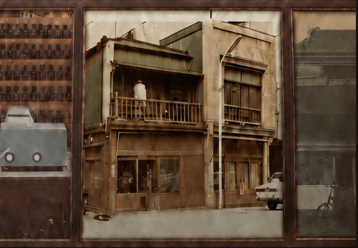
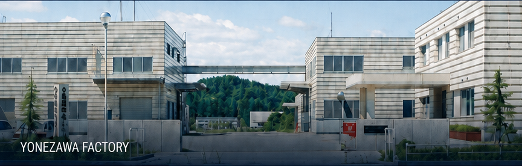

Our Japanese Principal
Kobayashi
Perfumery Co., Ltd.
More than a century of Japanese expertise
Heritage, creativity and manufacturing expertise—advancing fragrances, flavors and functional ingredients since 1900.
1900–2026
126 years of
continuous innovation
Founded in Nihonbashi, Tokyo as a medicinal raw-material merchant, Kobayashi Perfumery entered the fragrance and flavor business in 1925 and has continued to evolve through science, manufacturing and changing market needs.

- 1900Nihonbashi, Tokyo
- 1925Fragrance & Flavor
- 1935Manufacturing
- TodaySensory & Functional Innovation

Core Expertise
- Flavors
- Taste and character for evolving food markets.
- Fragrances
- Memorable scent experiences shaped by creativity and technology.
- Functional Ingredients
- Specialized value developed through advanced science and quality.
Research & Manufacturing
From research and application development to quality-controlled manufacturing, Kobayashi Perfumery transforms expertise into reliable solutions.